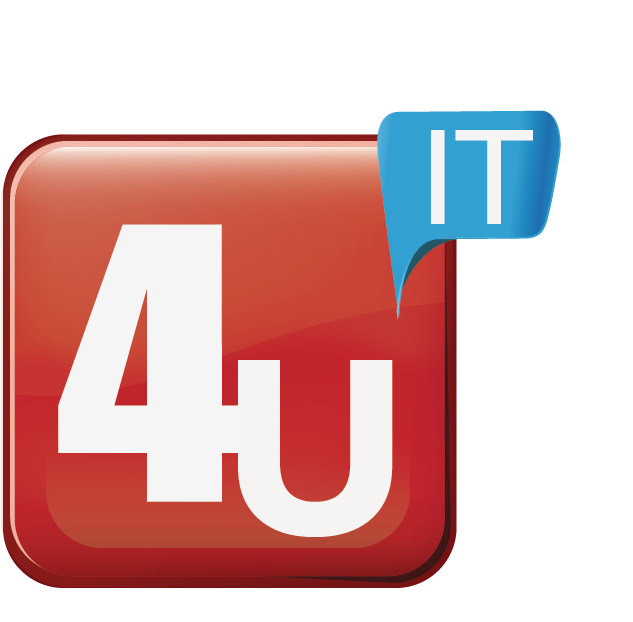
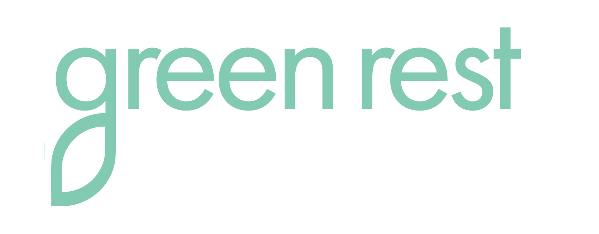

Relatório de Otimização — Instagram @greenrestmattress
1. Bio & Estrutura do Perfil
A bio atual é genérica e não comunica com clareza os principais diferenciais da Green Rest. Falta evidenciar tecnologia MedFIR, foco em recuperação e produção americana. Além disso, o CTA não direciona para conversão.
Diagnóstico
Pode melhorar- Mensagem ampla, sem demonstrar o verdadeiro diferencial da marca.
- Tecnologia MedFIR, recuperação muscular e “American built” quase invisíveis.
- Link da bio sem direcionamento estratégico.
O que ajustar
- Reescrever a bio com proposta de valor objetiva e clara.
- Organizar o link da bio via Linktree com: site, teste de colchão, produtos, localização e contato.
- Evitar hashtags e usar emojis apenas para estrutura visual.
Sugestão de bio:
“Sleep technology for pain-free nights. MedFIR® infrared therapy + American built quality. Orlando, FL. Tap the Linktree to test your next mattress.”
2. Identidade Visual do Feed
O feed hoje não tem uma identidade visual totalmente consistente. Para fortalecer o reconhecimento, é importante que qualquer post “pareça Green Rest” em poucos segundos.
Diagnóstico Consistência média
- Paleta de cores variando entre as postagens.
- Tipografias e estilos de arte diferentes em cada criativo.
- Logo e selo “Made in USA” aparecem pouco.
Resultado: feed menos reconhecível, com sensação de peças soltas, em vez de uma marca forte e coesa.
Recomendações visuais
- Definir paleta base (verde escuro, branco, cinza) e aplicá-la em todas as artes.
- Criar templates fixos para: tecnologia, bem-estar e institucional.
- Inserir logo/selo “Made in USA” de forma discreta em posts estratégicos.
- Usar o mesmo estilo de filtro/edição nas fotos para manter unidade.
3. Conteúdo & Mensagem
Os conteúdos falam de conforto e sono, mas ainda faltam profundidade técnica, educação, storytelling e prova social recorrente. Cada post precisa ter um objetivo claro.
| Dimensão | Situação atual | Oportunidades |
|---|---|---|
| Tecnologia (MedFIR) | Mencionada, mas pouco explicada em detalhes práticos. | Carrosséis “Por dentro do colchão”, infográficos, Reels explicando como o MedFIR atua na circulação e dores. |
| Bem-estar | Comunicado via conforto, mas ainda raso em nível de saúde e rotina. | Posts com dados sobre sono, dicas práticas, impacto em humor, energia e produtividade. |
| Prova social | Alguns depoimentos, mas sem frequência e formato de série. | Quadros fixos de clientes e atletas contando histórias reais e específicas. |
| CTAs & engajamento | Legendas muitas vezes informativas, mas pouco convidativas à interação. | Inserir perguntas, incentivos para salvar/compartilhar e “marque alguém”. |
Direção: transformar o feed em um mix equilibrado de educação, inspiração, prova técnica e conversão.
4. Qualidade vs. Quantidade (Frequência de Posts)
A frequência atual é baixa, mas o maior problema não é “número de posts por semana” e sim a ausência de um planejamento realmente estratégico. Focar apenas em volume é um erro comum.
Riscos de focar em quantidade Atenção
- Feed poluído com artes feitas às pressas, sem propósito.
- Queda de engajamento, pois o público ignora conteúdos rasos.
- Desgaste visual da marca, que perde autoridade.
- Mensagens desconectadas dos pilares de tecnologia, bem-estar e qualidade.
O que realmente importa
- É melhor publicar menos, porém com posts fortes, claros e alinhados à estratégia.
- Cada peça precisa comunicar algo que possa gerar percepção de valor e conversão.
- Posts devem ser pensados como “episódios” da mesma narrativa de marca.
Diretriz: melhor 1 conteúdo bem construído e estratégico do que 5 genéricos só para “encher o feed”.
5. Stories & Destaques
Stories e Destaques são ferramentas-chave para relacionamento, bastidores e acesso rápido a informações importantes.
Stories
- Ainda há espaço para usar Stories de forma mais estratégica.
- São ideais para bastidores, demonstrações rápidas, dúvidas frequentes e enquetes.
- Podem reforçar diariamente os pilares: tecnologia, bem-estar e qualidade.
Recomenda-se usar stickers de enquete, quiz e perguntas para aumentar a interação e captar insights da audiência.
Destaques (Highlights)
- Os Destaques já estão bons e cumprem bem o papel de organizar conteúdos importantes.
- Visualmente, passam boa primeira impressão e ajudam a entender a marca rapidamente.
- O principal agora é apenas manter os Destaques atualizados quando surgirem conteúdos realmente relevantes.
Não há necessidade de grandes mudanças estruturais nos Destaques neste momento.
6. Reels & Vídeos Curtos
Reels são hoje o formato mais importante para alcance orgânico e descoberta de novos públicos. O potencial da Green Rest nesse formato ainda não está sendo totalmente explorado.
Direção criativa
- Reels curtos (10–20s) com ganchos fortes nos 3 primeiros segundos.
- Uso de músicas/tendências em alta, mantendo sobriedade da marca.
- Storytelling visual: “antes e depois de uma noite em um Green Rest”, rotina de atleta, etc.
Ideias de séries
- Tech in 15s: cada vídeo explica um benefício técnico (MedFIR, suporte da coluna, circulação).
- Sleep Tips: dicas rápidas de sono com convite para salvar o vídeo.
- Real Stories: clientes e atletas contando em poucas frases o que mudou no corpo e no dia a dia.
Objetivo: tornar os Reels o motor principal de alcance, enquanto o feed fixa autoridade e consistência.
7. Engajamento
O engajamento atual está abaixo do potencial da conta. É preciso estimular mais conversa, salvamentos e compartilhamentos.
Gargalos
- Poucas perguntas diretas nas legendas.
- Poucos estímulos para salvar ou compartilhar o conteúdo.
- Interação limitada com outros perfis locais e do nicho.
Alavancas
- Encerrar legendas com perguntas do tipo: “Qual a sua maior dificuldade para dormir hoje?”
- Criar conteúdos “salváveis” (listas, dicas, checklists).
- Responder todos os comentários de forma rápida e personalizada.
- Comentar em perfis de academias, clínicas, fisioterapeutas e influenciadores locais.
Meta: transformar o perfil em uma conversa contínua sobre sono, saúde e recuperação – não só um catálogo de produtos.
8. Alinhamento com as 3 Campanhas-Chave
Todo o conteúdo orgânico deve conversar direta ou indiretamente com os três pilares definidos: Tecnologia, Bem-estar e Fabricação Americana.
| Pilar | Mensagem central | Exemplos de conteúdo |
|---|---|---|
| Tecnologia MedFIR | “Melhora circulação, reduz dores e acelera recuperação durante o sono.” | Carrosséis técnicos, infográficos simples, Reels “Tech in 15s”, cortes mostrando as camadas do colchão e animações explicando o infravermelho. |
| Bem-estar | “Dormir bem muda humor, energia, disposição e qualidade de vida.” | Dicas de sono saudável, dados de saúde, relatos de melhora de dores e cansaço, conteúdos motivacionais ligados a descanso e performance. |
| Fabricação Americana | “American built. Qualidade real, confiança real.” | Fotos e vídeos da fábrica, equipe de produção, selo “Made in USA”, bastidores em Orlando e posts em datas estratégicas que reforcem orgulho e confiança. |
Objetivo: ao rolar o feed por poucos segundos, qualquer pessoa deve perceber que a Green Rest é tecnológica, voltada para saúde e orgulhosamente americana.